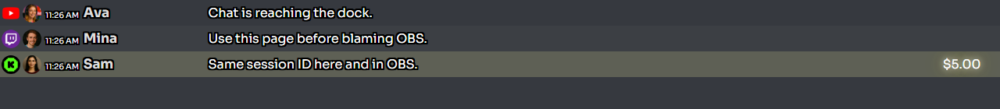
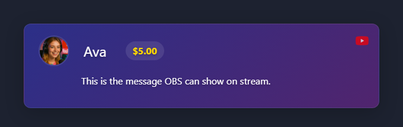
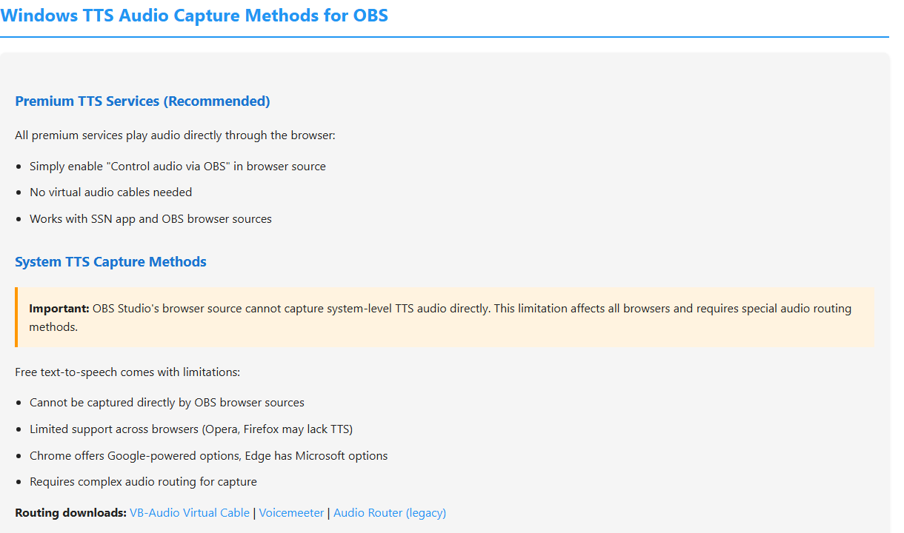

ドックから確認する
ドックでの確認が最も手早い方法です。ドックが空なら、まだOBSを調べないでください。先にプラットフォームのソースを直します。

保存済みのOBSのURLを置き換え、キャッシュを更新する
この順番で実行してください。キャッシュを更新するだけでは、変更したセッション、パスワード、サーバールーティングの設定は古いURLに追加されません。
- Social Stream Ninjaで、使用するドックやオーバーレイのリンクを新しく生成してコピーします。パラメーターを手動で編集せず、リンク全体をコピーしてください。
- OBSで、次の欄からSocial Streamのソースを探します： ソースで右クリックし、次を選択します： プロパティ.
- 確認する項目： ローカルファイル が選択されていないことを確認してください。次の欄をすべて選択します： URLを選択し、古いリンクを新しいリンクに置き換えます。

- プロパティウィンドウの下部までスクロールし、次をクリックします： 現在のページのキャッシュを更新（Refresh cache of current page）.
- クリックする項目： OKをクリックし、Social Stream Ninjaからテストメッセージを1件送ります。

まだ古い状態の場合： プロパティを閉じて開き直し、もう一度テストしてください。ブラウザーソースを削除し、新しいリンクで作り直すのは最後の手段です。
ドックリンクを開き直す
古いドックのページやウィンドウを閉じ、Social Stream Ninjaで新しく生成された ドック リンクをクリックします。OBSのカスタムブラウザードックとして保存している場合は、 ドック → カスタムブラウザードックを開き、URLを置き換えて変更を適用し、そのドックを開き直してください。
確認の順序
| テスト | 意味 | 次の手順 |
|---|---|---|
| ドックが空 | ソース／プラットフォームの取得がまだ動作していません。 | ログイン、ライブページ、ポップアウト／ソースページ、アプリのモード、プラットフォームのガイドを確認してください。 |
| ドックもブラウザーのオーバーレイも動く | OBSブラウザーソースが原因と考えられます。 | OBSソースを再読み込みし、URL、寸法、表示状態、キャッシュ、カスタムCSSを確認してください。 |
| ドックは動くがブラウザーのオーバーレイが空 | オーバーレイのページやセッションが違うか、一致するペイロードがありません。 | 同じセッションを使用し、期待する出力に合うページを選びます。 |
| 画像は出るがTTSが無音 | 音声ルーティングの問題です。 | プロバイダーTTSかシステムTTSか、およびOBSの音声キャプチャを確認してください。 |
オーバーレイURLを確認する
すべてで完全に同じセッションIDを使用してください。1文字違うだけで別の部屋になります。
https://socialstream.ninja/dock.html?session=YOUR_SESSION
https://socialstream.ninja/featured.html?session=YOUR_SESSION

OBSでTTSが無音の場合
通常のシステムTTSは、よくある落とし穴です。スピーカーから聞こえていても、OBSのブラウザーソースには音が入らない場合があります。

詳しいヘルプ： TTS設定ガイド.
よくある問題の対処
- 保存済みURLを置き換え、その後ブラウザーソースのキャッシュを更新.
- ソースを表示状態にし、幅と高さが小さすぎないことを確認してください。
- テキストの非表示や不透明度の問題を切り分けるため、OBSのカスタムCSSを一時的に外してください。
- OBSと同じURLを通常のブラウザーで開き、OBSの問題かSocial Stream Ninjaの問題かを切り分けます。
サポートがWindowsの権限の不一致を確認した場合は、次の手順： OBSとSocial Streamを管理者として実行するに従ってください。管理者モードは、空のドックに対する通常の解決策ではありません。